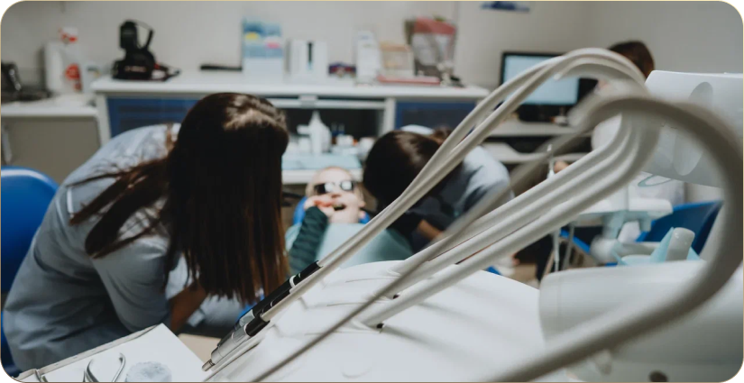
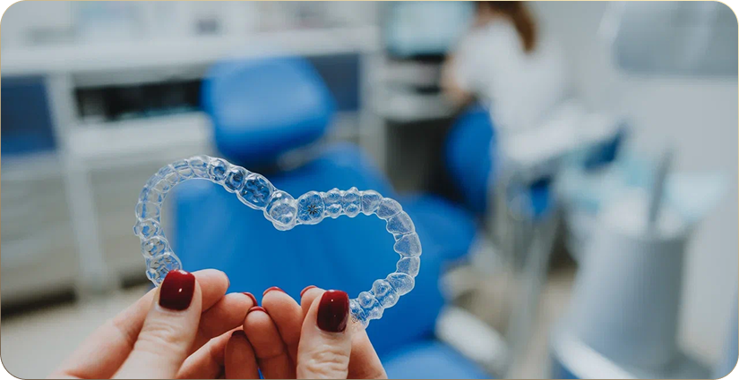

С чем связана высокая популярность элайнеров?
Еще несколько лет назад элайнеры считались
дорогостоящим методом лечения, подходящим для исправления небольших искривлений зубов.
Развитие рынка и совершенствование технологий
позволили снизить их стоимость и достигать
великолепных результатов исправления прикуса
в самых сложных клинических случаях.
Эстетика и удобство.
Незаметные капы, которые можно снять для комфортного приема пищи, намного желаннее пациентами, нежели брекеты, в которых постоянно застревает пища.
Экономия времени на посещениях.
С элайнерами нет такой строго регламентированной необходимости посещения ортодонта, так как в основном доктор приглашает для осмотров и контроля,
иногда для замены каких-либо вспомогательных элементов (аттачменты, кнопки, резинки).
Если не вовремя прийти к ортодонту при лечении на брекет-системе, дуги могут совершить неконтролируемые нежелательные движения,
для компенсации и исправления которых может понадобиться до полугода! Лишние полгода в брекетах - это большой срок.
Скорость лечения.
Часто на элайнерах удаётся исправить прикус намного быстрее, так как любой зуб можно переместить в четко заданное направление сразу.
При лечении на брекетах так нельзя, потому что биомеханика перемещений совсем другая.
Есть определенные этапы, через которые нельзя перескочить, как и нельзя передвинуть только один зуб.
Перемещению будет подвергаться весь зубной ряд, хотим мы этого или нет.

Эстетика и удобство.
Незаметные капы, которые можно снять для комфортного приема пищи, намного желаннее пациентами, нежели брекеты, в которых постоянно застревает пища.
Экономия времени на посещениях.
С элайнерами нет такой строго регламентированной необходимости посещения ортодонта, так как в основном доктор приглашает для осмотров и контроля,
иногда для замены каких-либо вспомогательных элементов (аттачменты, кнопки, резинки).
Если не вовремя прийти к ортодонту при лечении на брекет-системе, дуги могут совершить неконтролируемые нежелательные движения,
для компенсации и исправления которых может понадобиться до полугода! Лишние полгода в брекетах - это большой срок.
Скорость лечения.
Часто на элайнерах удаётся исправить прикус намного быстрее, так как любой зуб можно переместить в четко заданное направление сразу.
При лечении на брекетах так нельзя, потому что биомеханика перемещений совсем другая.
Есть определенные этапы, через которые нельзя перескочить, как и нельзя передвинуть только один зуб.
Перемещению будет подвергаться весь зубной ряд, хотим мы этого или нет.